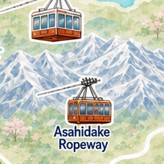
Kurodake Ropeway (กระเช้าคุโรดาเกะ)ขึ้นกระเช้าชมวิวหิมะแบบพาโนรามา
09:00
1.5 ชม.
- ขึ้นกระเช้าสถานีล่าง09:00
- ชมวิวหิมะจุดสูงสุด09:30
- เดินหิมะช่วงสั้น10:00
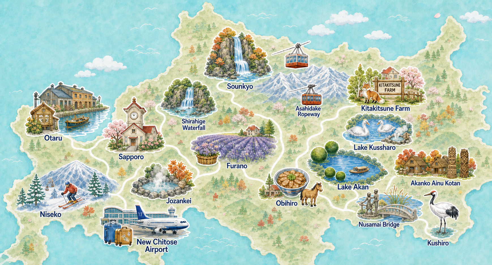
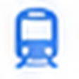
เดินทาง30%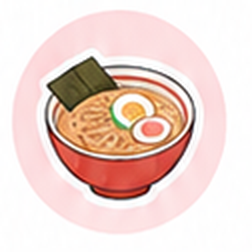
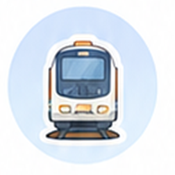
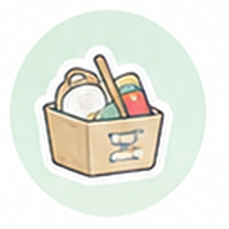
22 มกราคม 2026
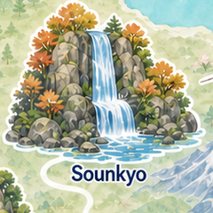
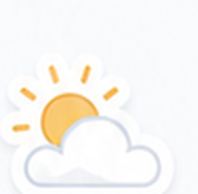
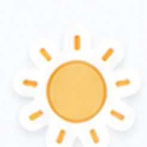
หุบเขาน้ำตกและกระเช้าลอยฟ้าใจกลางไดเซ็ตสึซัง

เทศกาลน้ำแข็งประจำปีกลางหุบเขา
หมู่บ้านวัฒนธรรมไอนุริมทะเลสาบอากัง

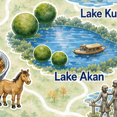
กิจกรรมฤดูหนาวบนทะเลสาบที่กลายเป็นน้ำแข็ง
ชมนกกระเรียนมงคลและตลาดริมท่าเรือ
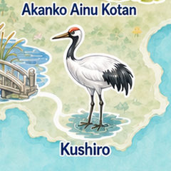
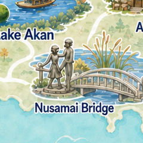
หมอกยามเช้าริมแม่น้ำก่อนเดินทางกลับ
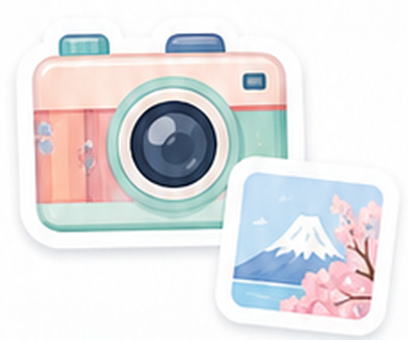
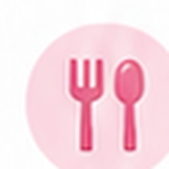
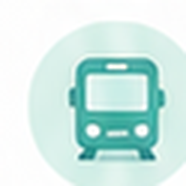
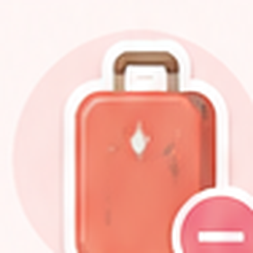